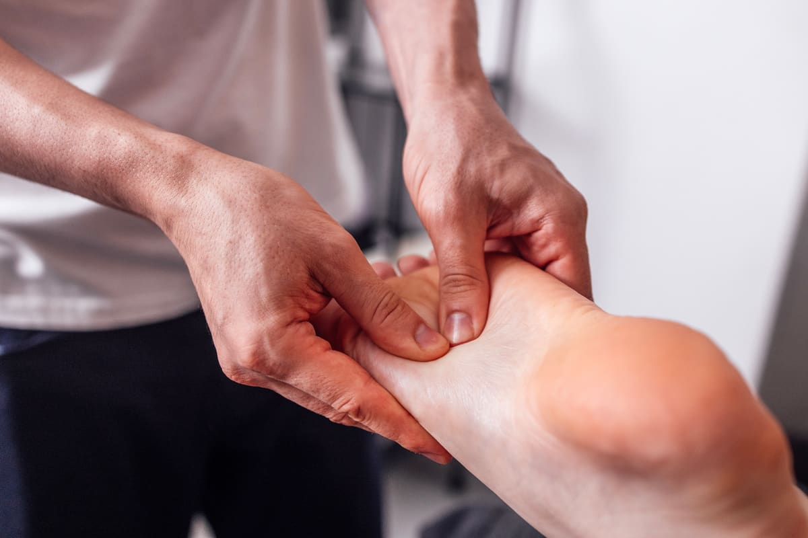
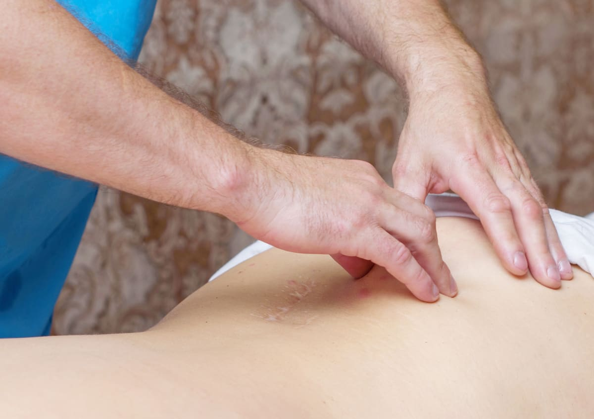
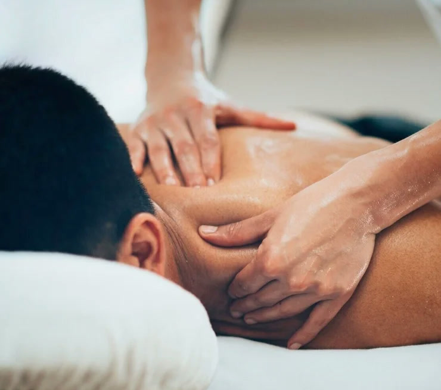

Orthopedic Massage (OM) focuses on the treatment and prevention of musculoskeletal dysfunction and pain.
In addition to treating specific injuries, OM is used to increase range of motion, decrease and manage pain and restore normal body movement and function. It can also help expedite recovery from an activity/competition and alleviate post exercise soreness.
SMI has developed a unique type of OM that combines deep tissue sports massage, trigger point therapy, myofascial release, Active Release Techniques ® (A.R.T.), Kinesio Taping ® and assisted stretching.
Book a MassageYou don’t need to be a Purple Patch Center Member to utilize SMI’s Orthopedic Massage Services, all are welcome!


And many more…

Paul received his Bachelor’s degree in Human Biodynamics from the University of California at Berkeley. He went on to obtain his Masters degree in athletic training/sports medicine from San Jose State University. Paul holds certifications as an athletic trainer, strength and conditioning coach, massage therapist, and active release therapist.
Before coming to SMI, Paul’s experience ranged from working in sports medicine clinics to working with high school, collegiate, and professional teams as an athletic trainer. In 1998 he worked with the University of California at Berkeley football and rugby teams and from 1999 to 2001 he was part of the San Francisco 49ers sports medicine staff.
Paul has worked at SMI since 2000. He has seen numerous types of injuries both work related and sports related. He has experience working with people who suffer from chronic and/or acute injuries. He also has experience in designing home exercise programs both therapeutic and preventive. Through SMI’s strong connection with Stanford athletics, Paul has been working with Stanford athletics/sports medicine since he started at SMI. He is currently working with the Women’s swimming team and Men’s soccer team.
Book PaulTracie has always been in the business of helping people. For over 20 years she worked as a chef in San Francisco, utilizing her skills and expertise to bring healthy meals and nutritional education to those who needed it most through programs focused on serving youth and underserved populations.
Eventually her long hours in the kitchen began to take a toll on her body and she realized she needed to make some changes. In the process of seeking treatment she discovered neuromuscular therapy and was fascinated and inspired by the healing it brought her. Her own treatment led her down the path of pursuing a career in neuromuscular therapy. She attended the National Holistic Institute where she graduated from both the Core program and then the Advanced Neuromuscular Therapy program. She has continued to add skills to her "tool box" becoming certified in Myofascial Decompression and earning a certificate from Champion Performance as a Therapy and Training Specialist.
Tracie has learned from her own experience the value of manual therapy in treating injuries, pain and movement dysfunction and she is passionate about sharing these benefits with others. Her experience of working through her own injuries has enhanced her expertise as a manual therapist and driven her to continue to learn and grow as a practitioner.
When not working, Tracie enjoys playing tennis, bike riding, going camping, and hosting cooking classes!
Book TraciePurple Patch and Sports Medicine Institute (SMI) have a long history of collaboration on athlete performance, with Mark Fadil and Matt Dixon teaming up to guide many professional and amateur athletes, as well as fitness enthusiasts, to their best performance.
With SMI’s rich history in elite athletics, as well as an appreciation of the needs of the time-starved athlete, integration into the Purple Patch Center experience makes perfect sense.
Learn More About Mark Fadil and SMICurated from years of coaching all levels of runners, these classes are more than a single fun workout.